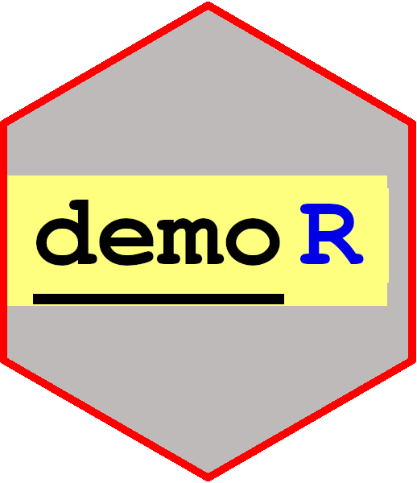

class: center, middle, inverse, title-slide # demoR ## ⚔<br>tools for presenting R code ### Kelly Bodwin ### California Polytechnic State University ### 2019/07/30 --- class: invert, center, middle # Why demoR? ### Because presenting R source code is hard --- Let's learn about piping in R! <code class ='r hljs remark-code'><span style='color:cornflowerblue'>iris</span> <span style='background-color:#ffff7f'>%>%</span><br> <span style='color:darkred'>group_by</span>(Species) <span style='background-color:#ffff7f'>%>%</span><br> <span style='color:darkred'>summarize</span>(Avg.Size = <span style='color:darkred'>mean</span>(Sepal.Length))</code> ``` ## # A tibble: 3 x 2 ## Species Avg.Size ## <fct> <dbl> ## 1 setosa 5.01 ## 2 versicolor 5.94 ## 3 virginica 6.59 ``` --- class: center, middle # Back in the "bad old days".... ### Formatting by hand --- In your code chunk: ```r iris %>% group_by(Species) %>% summarize(Avg.Size = mean(Sepal.Length)) ``` In your document: ```r <span style color='cornflowerblue'>iris</span> <span style background-color='yellow'>%>%</span> <span style color='darkred'>group_by</span> (Species) <span style background-color='yellow'>%>%</span> <span style background-color='darkred'>summarize</span> <span style background-color='yellow'>%>%</span> (Avg.Size = <span style background-color='darkred'>mean (Sepal.Length)) ``` -- ... and what if you decide to change something later? --- background-image: url(https://media.giphy.com/media/lJnAXeJO8tE7E37mxq/giphy.gif) # Copy-pasting code to text is bad. --- My source code: ```r demo_code(' iris %>% group_by(Species) %>% summarize(Avg.Size = mean(Sepal.Length)) ') %>% hlt_fixed("%>%") %>% hlt_funs(color = "darkred") %>% hlt_fixed("iris", color = "cornflowerblue") ``` --- class: center, middle # How it works --- class: invert, center, middle # `demo_code` object ### Formatted source code string ### Code output ### (Various options) --- class: center, middle # Three ways to create a demo_code object: --- class: invert, center, middle # 1 ## Directly from a string --- ```r demo_code(' iris %>% group_by(Species) %>% summarize(Avg.Size = mean(Sepal.Length)) ') %>% hlt_fixed("%>%") %>% hlt_funs(color = "darkred") %>% hlt_fixed("iris", color = "cornflowerblue") ``` <code class ='r hljs remark-code'><span style='color:cornflowerblue'>iris</span> <span style='background-color:#ffff7f'>%>%</span><br> <span style='color:darkred'>group_by</span>(Species) <span style='background-color:#ffff7f'>%>%</span><br> <span style='color:darkred'>summarize</span>(Avg.Size = <span style='color:darkred'>mean</span>(Sepal.Length))</code> ``` ## # A tibble: 3 x 2 ## Species Avg.Size ## <fct> <dbl> ## 1 setosa 5.01 ## 2 versicolor 5.94 ## 3 virginica 6.59 ``` --- # demo_code from string ### Pro: Ease of use -- * quick to type -- * contained in single chunk -- * intuitive object type -- * (future): specific tagging -- ### Con: Code testing -- * R recognizes it as a string --- class: invert, center, middle # 2 ## Reference a labelled code chunk --- ### Code chunk with label "iris_size" 👇 ```r iris %>% group_by(Species) %>% summarize(Avg.Size = mean(Sepal.Length)) ``` -- ### Code chunk to make demo 👇 ```r demo_chunk("iris_size") %>% hlt_fixed("%>%") %>% hlt_funs(color = "darkred") %>% hlt_fixed("iris", color = "cornflowerblue") ``` <code class ='r hljs remark-code'><span style='color:cornflowerblue'>iris</span> <span style='background-color:#ffff7f'>%>%</span><br> <span style='color:darkred'>group_by</span>(Species) <span style='background-color:#ffff7f'>%>%</span><br> <span style='color:darkred'>summarize</span>(Avg.Size = <span style='color:darkred'>mean</span>(Sepal.Length))</code> ``` ## # A tibble: 3 x 2 ## Species Avg.Size ## <fct> <dbl> ## 1 setosa 5.01 ## 2 versicolor 5.94 ## 3 virginica 6.59 ``` --- ### Pro: Ease of use -- * Chunks behave like chunks -- * Multiple references to the same chunk is ok -- ### Con: Two chunks -- * Don't forget to `include = FALSE` on original -- * Don't forget to `echo = FALSE` on second chunk --- class: invert, center, middle # (3) ## chunk option + comment tagging --- ### Option: `demo = TRUE` ```r iris %>% * group_by(Species) %>% summarize(Avg.Size = mean(Sepal.Length)) #<< 1 ##<< hlt_args(color = "darkred") ##<< hlt_tag(1, "Avg.Size") ``` -- ## This is a future plan! ## Request: syntax feedback. --- class: invert, center, middle # the `hlt_*` functions --- # `hlt_*` * `hlt_regexp`: any regular expression * `hlt_fixed`: any fixed string * `hlt_funs`: functions * `hlt_args`: function arguments in form `x = ` * `hlt_input_vals`: input to functions --- # Disclaimer  --- class: center, middle # Tips and Tricks --- class: invert, center, middle # 1 ### Code in `demo_code` runs "as normal" --- # Object definition works ```r demo_code('foo <- 10') %>% hlt_fixed("foo") ``` <code class ='r hljs remark-code'><span style='background-color:#ffff7f'>foo</span> <- 10</code> ```r foo + 5 ``` ``` ## [1] 15 ``` ### Don't interrupt your analysis flow! --- class: invert, center, middle # 2 ### Running in console "works" --- class: invert, center, middle # 3 ### Useful for showing "broken" code --- # Teaching common errors What happens when you forget a parenthesis? ```r demo_code(' plot(1:10 ') %>% hlt_fixed("(") ``` <code class ='r hljs remark-code'>plot<span style='background-color:#ffff7f'>(</span>1:10</code> ``` ## Error: <text>:2:0: unexpected end of input ## 1: plot(1:10 ## ^ ``` --- class: invert, center, middle # 4 ### Masking --- # Teaching exercises Fill in the blank: ```r demo_code(' iris %>% group_by(Species) %>% summarize(Avg.Size = mean(Sepal.Length)) ') %>% mask("Species", background = "pink") ``` <code class ='r hljs remark-code'>iris %>% <br> group_by(<span style='color:transparent;background-color:pink'>Species</span>) %>%<br> summarize(Avg.Size = mean(Sepal.Length))</code> ``` ## # A tibble: 3 x 2 ## Species Avg.Size ## <fct> <dbl> ## 1 setosa 5.01 ## 2 versicolor 5.94 ## 3 virginica 6.59 ``` (Thanks, Alison!) --- class: invert, center, middle # 5 ### Presentations from R Markdown --- # Making slides ### `demoR` works in *any* R Markdown-sourced context --  -- Formatting is hard. 😿 --- class: invert, center, middle # Takeaways --- class: invert, center, middle # You can use demoR now! ```r devtools::install_github("kbodwin/demoR") ``` ### PRs and Issues = ❤️ --- class: invert, center, middle # Feedback and requests welcome!  --- # Thank you! -- * Hunter Glanz, co-dev of `demoR` + Coming up in just 30 minutes! -- * YiHui Xie for knitr and R Markdown + What a genius -- * Garrick Aden-Buie for highlighting in remark.js + JavaScript wizard -- * Alison Hill for `mask()` + (and moral support) -- * JSM organizers + especially Daniel Kaplan! --- ## Find me on the interwebs * GitHub: <a href="www.github.com/kbodwin/demoR">kbodwin</a> * Email: <a href="mailto:kbodwin@calpoly.edu">kbodwin@calpoly.edu</a> * Twitter: <a href="www.twitter.com/kellybodwin">@kellybodwin</a> * Website: <a href="www.kelly-bodwin.com">kelly-bodwin.com</a> ---